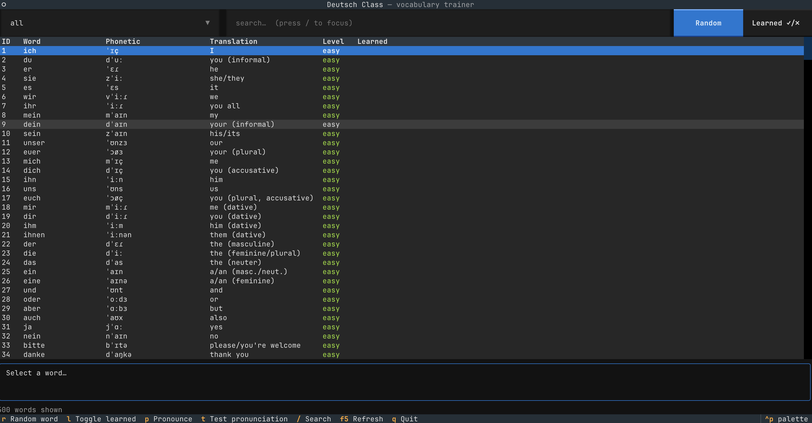

Is there any need for yet another Language learning platform?
Having recently moved to Berlin, I wanted to practice and expand my German vocabulary, I was struggling prioritizing between my German practise and ML projects. So I built Deutsch Class: a fully local German learning app with a Postgres-backed vocabulary database, a FastAPI REST API, and a terminal UI. Everything runs on my machine.

Architecture
The whole thing is three small pieces:
┌───────────┐ HTTP ┌──────────────┐ SQL ┌────────────────┐
│ TUI │ ────────► │ FastAPI │ ───────► │ PostgreSQL │
│ (Textual) │ │ api/main.py │ │ deutsch_class │
└───────────┘ └──────────────┘ └────────────────┘- PostgreSQL stores ~1,000 words seeded from a JSON
file (402 easy · 402 medium · 196 difficult), each with a phonetic
transcription, English translation, and a
learnedflag. - FastAPI exposes listing, search, filtering, CRUD, random draws, and stats.
- Textual drives the terminal frontend against the live API.
The schema is deliberately simple, with difficulty constrained at the database level:
CREATE TABLE words (
id SERIAL PRIMARY KEY,
word TEXT NOT NULL,
phonetic TEXT,
translation TEXT,
difficulty TEXT NOT NULL CHECK (difficulty IN ('easy', 'medium', 'difficult')),
learned BOOLEAN NOT NULL DEFAULT FALSE,
UNIQUE (word, difficulty)
);One entry point (main.py) starts the API and launches
the TUI together, so uv run main.py is all you need.
The TUI
Textual made the terminal frontend genuinely pleasant to build. The main screen has a filterable word table, a search box, and a detail panel for the selected word.
Keybindings are kept minimal:
| Key | Action |
|---|---|
r |
Draw a random word |
l |
Toggle learned on selected word |
p |
Pronounce the selected word (TTS) |
t |
Test pronunciation of the selected word (mic+ASR) |
/ |
Focus the search box |
F5 |
Refresh the word list |
q |
Quit |
Random draw mode is where most of the studying happens — pull a random unlearned word at your chosen difficulty, hear it spoken, mark it learned when you’ve got it.
Text-to-speech
Every word shown is announced aloud using macOS say with
a German voice. Pressing p replays the currently selected
word. It’s a tiny feature but it completely changes how the app feels —
you’re not just reading, you’re hearing the language constantly.
Pronunciation testing with on-device Whisper
This is the part I’m most happy with. Press t and the
app records 3 seconds from your microphone, transcribes the audio
locally with mlx-whisper
using whisper-large-v3-turbo-german-f16 (a German-optimized
model that runs fast on Apple Silicon), then scores your attempt against
the target word via character-level edit distance:
- ≥ 80% — green
- 50–79% — yellow
- < 50% — red
No audio ever leaves the machine. The first run downloads the ~1.6 GB model; after that it’s instant.
The API
The API is thin but complete — interactive docs come free with
FastAPI at /docs.
| Method | Endpoint | Description |
|---|---|---|
| GET | /words |
List/filter/search words |
| GET | /words/random |
Random word (filter by difficulty, unlearned only) |
| POST | /words |
Create a word |
| PATCH | /words/{id} |
Update any subset of fields |
| POST | /words/{id}/toggle-learned |
Flip the learned flag |
| DELETE | /words/{id} |
Delete a word |
| GET | /stats |
Counts per difficulty + learned + total |
curl "localhost:8000/words/random?difficulty=easy&unlearned_only=true"
# {"word":"geradeaus","phonetic":"ɡərˈɑdeːˌaʊs","translation":"straight ahead",
# "difficulty":"easy","id":294,"learned":false}What’s next
The code is on GitHub. If you
have an Apple Silicon Mac and a Postgres instance lying around,
uv sync && uv run main.py gets you using it right
away.